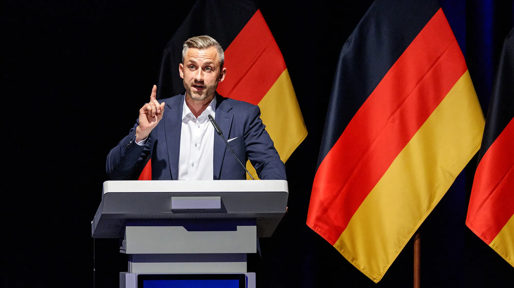

Det finnes alltid mer enn det øyet ser.
Den sjette sansen handler om å oppfatte det som ikke alltid er åpenbart. I Sixth Sense utforsker vi historier, perspektiver og detaljer som gir oss nye måter å se verden på.

Siste nytt
-
01
Et høyreekstremt parti vant valget i Sachsen-Anhalt
Hvordan kunne AfD bli den største politiske kraften i Sachsen-Anhalt?
Les artikkelen
-
02
Dette er høstens største trender, men hvor lenge varer de?
I en moteverden hvor det stadig dukker opp nye trender, er det verdt å spørre hvor lenge de egentlig varer.
Les artikkelen
-
03
GTA 6: Hvor dyrt kan et spill bli?
GTA VI koster 949 kroner. Gamer og streamer Fredrik Siegel mener prisen er verdt det.
Les artikkelen